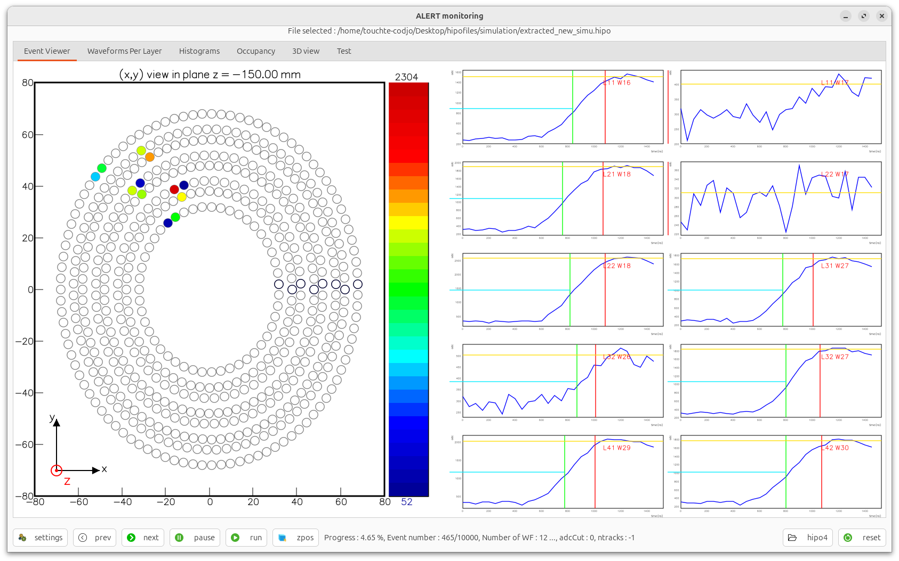
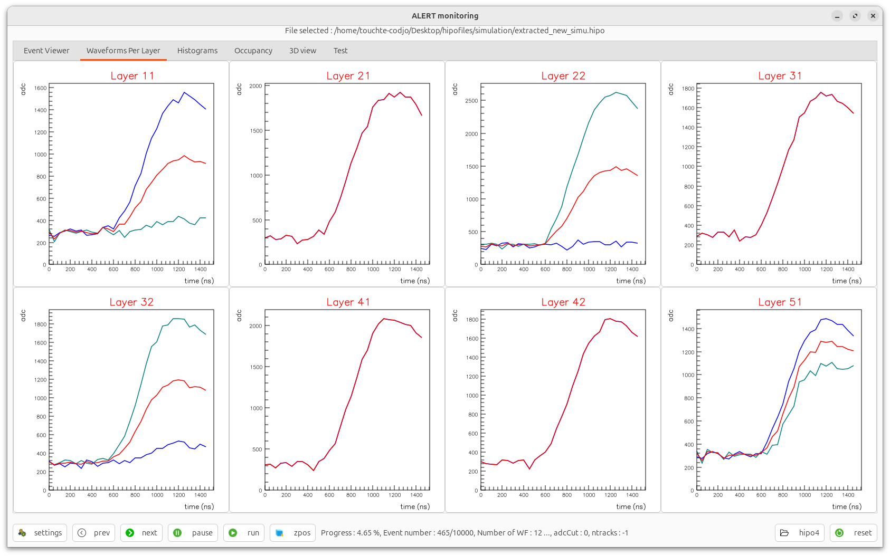
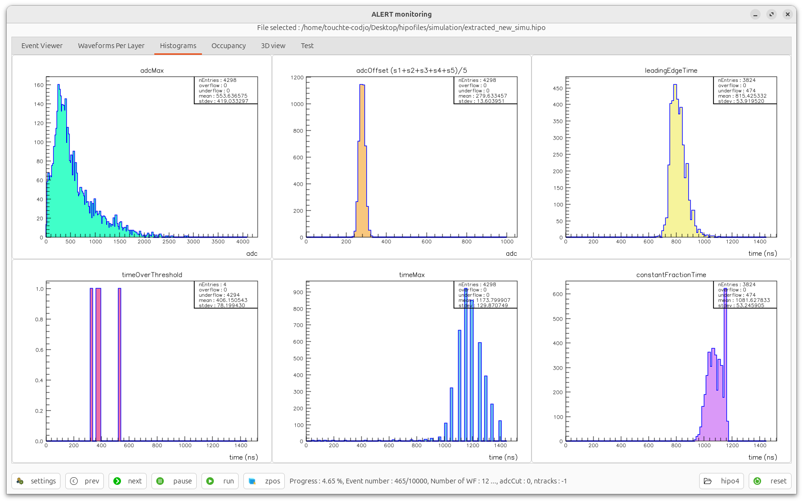

Simulation - current state - waveforms
Lognumber 35.
Submitted on Thu, 07 Aug 2025 - 01:34:56 CEST
Marker: simulation
Send to:
That works very well.
- we have to use the PuseEctraxtorEngine to generate AHDC::adc from AHDC::wf
- the simulation generates 30 samples
- the sampling time and others are used in reconstruction, no need at this point
- we have a big delay at the beginning
- update the code, work on samples instead of time ?
- as we have to load the t0 from ccdb which in ns and not on bins we have to know the sampling time in simulation
sampling time is now 48 ns instead of 50 ns (cf notes google docs)
Description
---
/scigroup/cvmfs/hallb/clas12/sw/noarch/clas12-config/dev/gemc/dev/rgl_spring2025_D2.gcard
BEAM_P="proton,200*MeV,90*deg,0*deg"
SPREAD_P="90*MeV, 30.0*deg, 180*deg"
Attachments (3)
1.

2.

3.
